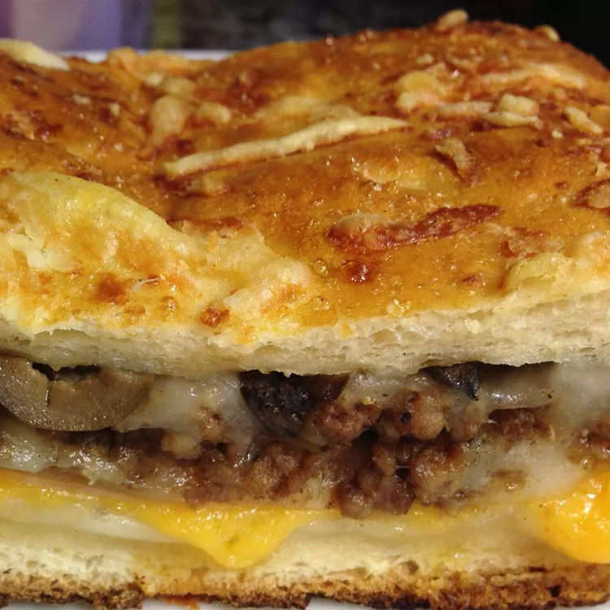

Stromboli

Description
This Stromboli recipe uses premade pizza dough. Kids and adults alike will love this pizza creation.
Ingredients
- 1 (10 ounce) package pizza crust dough
- ½ pound lean ground beef
- 1 (14 ounce) jar pizza sauce
- 1 cup cooked ham, diced
- 1 medium green bell pepper, chopped
- 1 medium red onion, finely chopped
- 1 (4.5 ounce) can mushrooms, drained
- 1 (8 ounce) package sliced pepperoni sausage
- 1 cup shredded mozzarella cheese
- ¼ cup butter, melted
Steps
- Preheat the oven to 400 degrees F (200 degrees C).
- Cook and stir ground beef in a skillet over medium heat until browned and crumbly, 5 to 7 minutes. Drain and discard grease. Remove from the heat; stir in pizza sauce, ham, bell pepper, onion, and mushrooms until well combined.
- Roll dough on a lightly floured surface into a large square; transfer to a rimmed baking sheet. Arrange pepperoni over the lower half of the square, then spoon desired amount of sauce over pepperoni. Sprinkle mozzarella over sauce, then fold top half of dough down over fillings; pinch the edges together to seal. Poke holes in the dough and brush with melted butter. If you have remaining sauce, reserve it for another use.
- Bake in the preheated oven until golden brown, about 30 minutes. Remove from the oven and cut into four pieces.